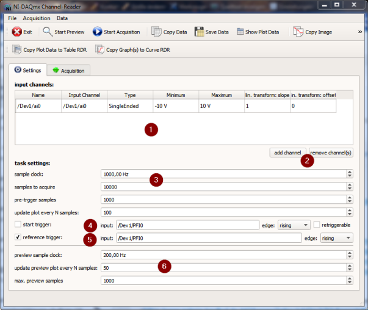
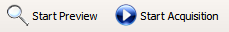
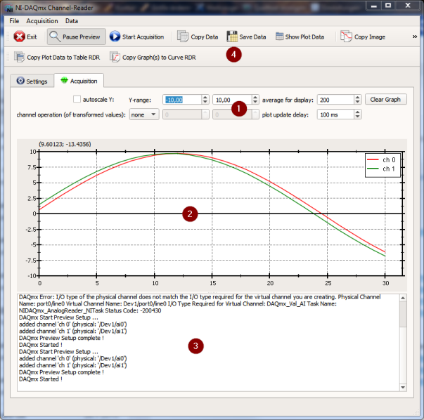

$$qf_commondoc_header.start$$ $$qf_commondoc_header.end$$
Introduction
This plugin provides a simple reader for the inputs of DAQ-cards from National Instruments, or that are controllable over the National Instruments NI-DAQmx driver. It can sample several analog channels from one card and display the results as a graph. The data can be stored into files (e.g. CSV, Matlab MAT, ...), asgraphics (PNG, JPEG, PDF, SVG, ...) or as a table RDR in the current project for further processing.
$$note:You will have to install the NI-DAQmx driver on your computer, before this plugin may function. If the driver is not found, the plugin will not be loaded when QuickFit starts up.$$
This tool can acquire in two modes:
- PREVIEW simply samples the current data and displays it, but does not use any triggering. This is meant to quickly display and check the input signals. This mode acquires a certain number of samples and displays them. When this buffer is full, further samples are acquired and older samples are discarded, so you get a continuous acquistion.
- ACQUISITION uses the full triggering and acqusition capabilities of the card. This mode simply acquires a pre-defined number of samples and stops when this number is reached.
Usage
Starting the Tool
You can start this tool from the menu entry Extensions |  Start NI-DAQmx Channel-Reader in the main window.
Start NI-DAQmx Channel-Reader in the main window.
Setup of the Measurement
$$see:You will find detailed instructions about your DAQ card and its capabilities in the documentation, provided with the card! This documentation should also define the terminology used by NI, whcih is also used for the remainder of this page.$$
The tool's main window is split into two tabs. The first Tab  Settings allows to setup the acqusition:
Settings allows to setup the acqusition:

- At the top of the tab, you can add the input channels that you want to read to the list (1). For each channel you can give a unique name, specify the channel itself (in the National Instruments notation /DEVICE/CHANNEL, select the input type (single-ended, differential, ...), the volatge range and give parameters for a linear transform for the values: $[x' = \mbox{slope}\cdot x + \mbox{offset}]$YOu can add new channels or delete channels from the table with the buttons designated by (2).
- Below the channels list, you can configure the acquisition task (3), i.e. the sample-clock, the number of samples to acquire and the number of pre-trigger samples (this is only used, if a reference trigger is used!). Finally you can specify the update frequency of the graph during the measurement as "update plot every N samples". $$warning:If this number is too small, the program will try to update the plot too often, which results in slow reaction of the whole program and possible crashes! So if you don't need a fast online-display of the data, set this number to 1-2 updates per second! Also note that the tool will wait at least a minimum delay time between updates, so it may be that the graph is updated less often than expected (see Acquisition-tag).$$
- The settings (4) allow to specify a digital start-trigger for your measurement.
- The settings (5) allow to specify a digital reference-trigger for your measurement.
- The final three widgets, labeled (6) allow to set the sample-clock, plot update and max. number of samples for the coninuous Preview-mode.
$$note:You can store/reload these settings with the menu File to/from an INI-file.$$
Acquisition
After setting everything up, you can start the measurement itself, either in preview-mode or in acquisution-mode by clicking one of these two toolbar-buttons (or the entries in the menu Acquisition):

Depending on which mode you chose, the triggerable acquisition, or a continuous preview is used. In both cases, the tool's window switches to the second tab  Acquisition:
Acquisition:

The major part of this tab contains the (preview) plot (2) and a widget for logging output (3). If error's occur, these are reported here and the acqusition will not start!
With the widgets labeled (1), you can change the appearance of the plot (2):
- You can chose an automatic scaling of the y-axis, or specify a y-range.
- Data will be averaged for the display, to improve the plot performance (plotting many datapoints can take quite a while). However this averaging is done for display only and if you save the data, the non-averaged and the averaged data will be present in the output file.
- You can do calculations/operations with the specified channels:
- you can divide one channel by another (simply specify the channel numbers (0-based) that you want to divide.
- Finally you can spoecify a minimum delay between two subsequent replots. This potentially lowers the plot update-rate, but ensures that the user interface stays repsonsive.
You can use all tools of any plot widget in QuickFit by right-clicking into the plot and using its context-menu. IN addition, the most important options for saving/copying/printing the data have their own toolbar-buttons at the top of the window (4).